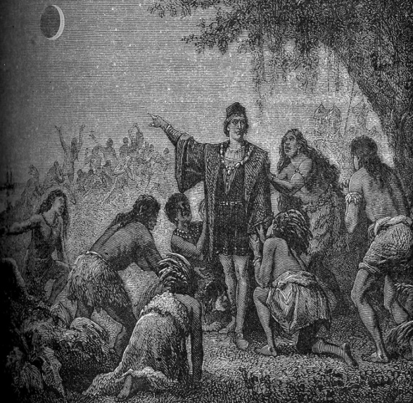

Екскурс в історію подорожі Колумба
У лютому 1504 року під час четвертої подорожі кораблі Христофора Колумба сіли на мілину біля берегів Ямайки. Колумб був змушений залишити половину екіпажу на острові. Екіпаж потерпав від нестачі харчів. Мореплавець почав прохати місцеве населення про допомогу, але воно відмовлялося давати харчі іспанцям [4].
Колумб пішов на хитрість. Знаючи з астрономічних довідників, що найближче місячне затемнення буде 29 лютого 1504 року (це було обчислено ще в 1474 р. і подано в таблицях Ріомонтана), він попередив місцеве населення, що за їх відмову давати їжу іспанцям бог почне збільшувати Місяць, показуючи таким чином свою лють.
У призначений час, відбулося місячне затемнення, під час якого Місяць потемнішав і став червоного кольору. Побачивши це, місцеве населення злякалося, що "втратить Місяць" та почало благати Колумба про його заступництво перед богом. Аборигени принесли іспанцям достатню кількість їжі. Колумб зумів отримати від аборигенів необхідний для експедиції провіант [4].
Колумб «віддає» аборигенам Місяць
